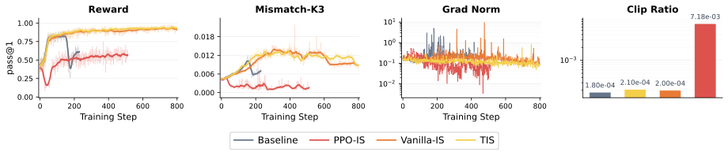
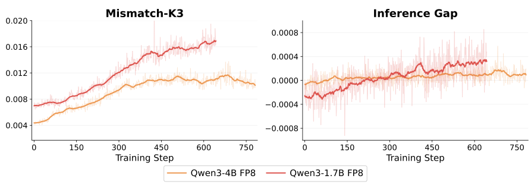
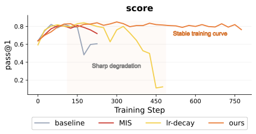
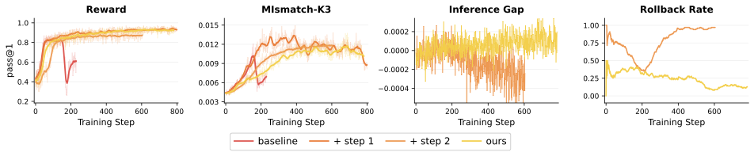
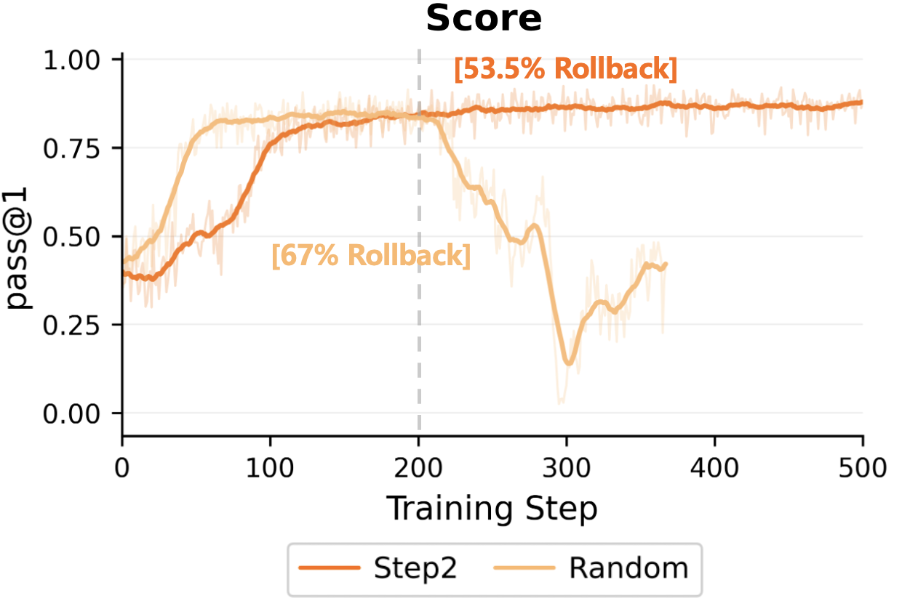

TL;DR
Reinforcement learning (RL) has become central to LLM post-training, but RL training is fragile and can collapse. A key culprit is training-inference mismatch: modern LLM RL pipelines use separate inference engines (e.g., vLLM) and training engines (e.g., Megatron), which can assign different probabilities to the same trajectories even with synchronized parameters.
Existing methods try to stabilize the training policy under this mismatch. We point out a neglected issue: objective misalignment. An update that improves the training policy does not necessarily improve the inference policy that is actually deployed.
We propose Monotonic Inference Policy Improvement (MIPI) — a new principle that takes the improvement of the deployed inference policy as the optimization target. We then introduce Monotonic Inference Policy Update (MIPU), a two-step framework that (1) constructs sampler-referenced candidate updates and (2) selectively accepts synchronized candidates via an inference-side gap proxy.
What is Training-Inference Mismatch?
Modern LLM RL separates rollout generation from gradient computation. Responses are sampled by an inference engine (e.g., vLLM, SGLang) for efficiency, while log-probabilities and updates are computed by a training engine (e.g., FSDP, Megatron) for precision.
Even when model parameters are synchronized, implementation differences in precision, decoding, or serving backends make the training policy $\textcolor{blue}{\pi}$ and inference policy $\textcolor{red}{\mu}$ assign different probabilities to the same trajectories:
This mismatch creates a special, ever-present form of off-policyness that poisons the training process.
Objective Misalignment
Prior works reduce mismatch by correcting sampler-side ratios, filtering unstable samples, decaying learning rates, or narrowing system-level discrepancies. They aim to stabilize the training policy.
But because the mismatch always exists, improving the training policy does not guarantee improving the inference policy:
The right question: Whether synchronizing this update actually produces a better inference policy?
MIPI: Monotonic Inference Policy Improvement
We propose to take the inference-policy improvement as the direct optimization objective:
We decompose this target into three interpretable terms:
Terms \textcircled{2} and \textcircled{3} form a sampler-referenced policy update (Step 1), while Term \textcircled{1} is used for inference-gap-aware acceptance (Step 2).
MIPU: Two-Step Realization
1Step 1: Sampler-Referenced Policy Update
Step 1 targets Terms \textcircled{2}+\textcircled{3}, which telescope to $J(\textcolor{blue}{\pi_{k+1}}) - J(\textcolor{red}{\mu_k})$. The key ratio is factorized as:
We adopt a Truncated Importance Sampling (TIS) update that clips only the current-update ratio $r_i(\theta)$, while truncating the pre-update mismatch weight $w_i^k$ to control variance:
This produces a candidate training policy $\textcolor{blue}{\pi_{k+1}}$ that is referenced to the sampler $\textcolor{red}{\mu_k}$ rather than to the old training policy.

Step 1 analysis: TIS provides the best stability-performance trade-off among sampler-referenced variants.
2Step 2: Inference-Gap-Aware Update Acceptance
After synchronizing $\textcolor{blue}{\pi_{k+1}} \to \textcolor{red}{\mu_{k+1}}$, Step 2 estimates the post-update inference gap:
The candidate is accepted if $\widehat{T}_{\mathrm{post}} \geq -c$, and rolled back otherwise. This ensures that training-side gains are actually realized by the inference engine.

The post-update gap proxy carries a meaningful inference-side signal across model scales.
Results
We evaluate MIPU under FP8-quantized rollout, a high-mismatch setting where quantized inference amplifies the gap between $\pi$ and $\mu$. Experiments are conducted on Qwen3-1.7B and Qwen3-4B across five mathematical reasoning benchmarks.
Main Results
| Model | Method | MATH | AIME | Olympiad | Minerva | AMC23 | Avg. | Stable |
|---|---|---|---|---|---|---|---|---|
| Qwen3-4B | Baseline | 89.34 | 42.00 | 64.89 | 43.39 | 82.50 | 64.42 | ✘ |
| MIS | 90.95 | 38.44 | 62.50 | 44.12 | 81.09 | 63.42 | ✘ | |
| LR-decay | 90.34 | 44.00 | 67.26 | 43.75 | 82.97 | 65.66 | ✘ | |
| Ours | 91.15 | 43.56 | 67.86 | 45.96 | 85.00 | 66.71 | ✔ | |
| Qwen3-1.7B | Baseline | 83.10 | 25.33 | 56.55 | 31.68 | 57.66 | 50.86 | ✘ |
| MIS | 81.29 | 24.67 | 58.33 | 34.19 | 60.16 | 51.73 | ✘ | |
| LR-decay | 82.09 | 26.00 | 58.93 | 28.68 | 65.47 | 52.23 | ✘ | |
| Ours | 86.52 | 24.67 | 59.52 | 33.82 | 65.31 | 53.97 | ✔ |
Pass@1 accuracy (%) under FP8-quantized rollout. MIPU achieves the best average performance and remains stable.

Compared methods reach reasonable intermediate performance but later degrade; MIPU maintains a stable trajectory.
Ablation Study
| Method | MATH 500 | AIME 24 | Olympiad | Minerva | AMC23 | Avg. |
|---|---|---|---|---|---|---|
| Baseline | 89.34 | 42.00 | 64.89 | 43.39 | 82.50 | 64.42 |
| + Step 1 | 90.34 | 41.11 | 68.45 | 44.85 | 82.03 | 65.36 |
| + Step 2 | 90.34 | 40.44 | 64.88 | 43.38 | 75.00 | 62.81 |
| Ours | 91.15 | 43.56 | 67.86 | 45.96 | 85.00 | 66.71 |
Ablation on Qwen3-4B FP8-quantized rollout. Step 1 and Step 2 are complementary.

Step 1 improves the candidate update direction, while Step 2 filters unreliable synchronized candidates.
Step 2 is Not Random Rollback
We compare Step 2 against a random rollback baseline with the same rejection rate. Random rollback rejects more updates but still collapses, showing that Step 2 benefits from conditioning acceptance on the inference-gap signal rather than merely sparsifying updates.

Random rollback is more conservative but still collapses; Step 2 uses the inference-gap signal to filter harmful candidates.
Takeaway
Training-inference mismatch should not be treated only as a low-level system discrepancy. It changes the very objective of policy improvement: the policy we care about is the one used for deployment, not the one inside the training engine. MIPU turns this insight into a practical two-step algorithm and demonstrates improved reasoning performance and training stability under high mismatch.
BibTeX
@article{liang2026mipu,
title={The Mirage of Optimizing Training Policies: Monotonic Inference Policies as the Real Objective for LLM Reinforcement Learning},
author={Liang, Jing and Tang, Hongyao and Ma, Yi and He, Yancheng and Wang, Weixun and Li, Xiaoyang and Huang, Ju and Su, Wenbo and Liu, Jinyi and Zheng, Yan and Hao, Jianye and Zheng, Bo},
journal={arXiv preprint arXiv:XXXX.XXXXX},
year={2026},
url={https://anitaleungxx.github.io/MIPU/}
}